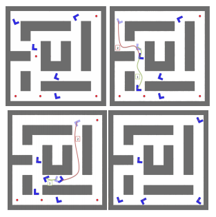
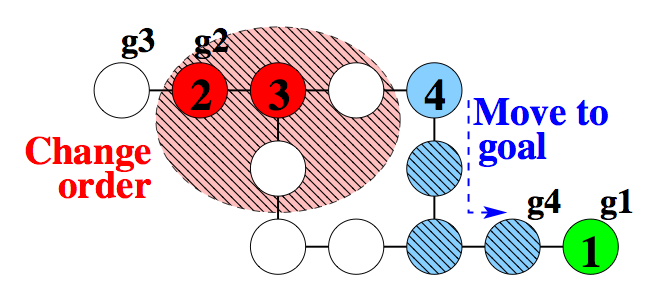

Research
Multiagent Pathfinding in Continuous Space
 Motivated by eficient algorithms for solving combinatorial and discrete instances of the multi-agent pathfinding problem, this report investigates ways to utilize such solutions to solve similar problems in the continuous domain. While a simple discretization of the space which allows the direct application of combinatorial algorithms seems like a straightforward solution, there are additional constraints that such a discretization needs to satisfy in order to be able to provide some form of completeness guarantees in general coniguration spaces. This report reviews ideas on how to utilize combinatorial algorithms to solve continuous multiagent pathfinding problems. It aims to collect feedback from the community regarding the importance and the complexity of this challenge, as well as the appropriateness of the solutions considered here
Publications
Athanasios Krontiris, Qandeel Sajid, Kostas E Bekris. "Towards Using Discrete Multiagent Pathfinding to Address Continuous Problems", In the Workshops at the Twenty-Sixth AAAI Conference on Artificial Intelligence, July 22-July 23, 2012, Toronto, Canada. [PDF]
Parallel Push and Swap
 Multi-agent pathfinding is a challenging combinatorial problem that involves multiple agents moving on a graph from a set of initial nodes to a set of desired goals without inter-agent collisions. Searching the composite space of all agents has exponential complexity and does not scale well. Decoupled methods are more efficient but are generally incomplete. There are, however, polynomial time algorithms, which utilize single or few agents primitives with completeness guarantees. One limitation of these alternatives is that the resulting solution is sequential, where only one agent moves at a time. Such solutions are of low quality when compared to methods where multiple agents can move simultaneously. This work proposes an algorithm for multi-agent pathfinding that utilizes similar single-agent primitives but allows all agents to move in parallel. The paper describes the algorithm and its properties. Experimental comparisons suggest that the resulting paths are considerably better than sequential ones, even after a post-processing, parallelization step, as well as solutions returned by decoupled and coupled alternatives. The experiments also suggest good scalability and competitive computational performance.
Publications
Qandeel Sajid, Ryan Luna, and Kostas E. Bekris, "Multi-Agent Pathfinding with Simultaneous Execution of Single-Agent Primitives", In The 5th Annual Symposium on Combinatorial Search (SoCS), July 19-21, 2012, Niagara Falls, Canada. [PDF]